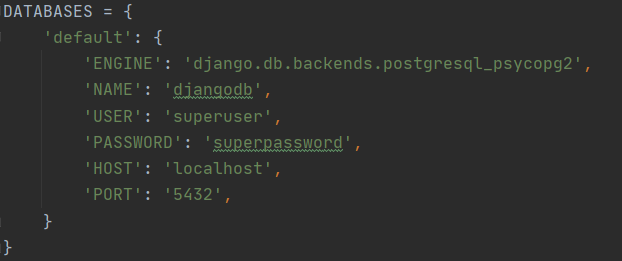

What: Integrating a Postgres docker image with Django
Why: Expand the capabilities of Django by using an external db
How: Simply running a postgres docker image, create a superuser, provide Django the DB credentials
I like using PyCharm for my Django project. This is because when creating a new project PyCharm automatically creates
a virtual environment for you. I a big fan of doing less :)
Usually I would need to download Postgresql from their website, but instead of doing this I wanted to have my own lightweight docker image. I did this becuase docker is awesome, the image is very small compared to actually downloading it, and I can easily spin up my image using a docker-compose file.
This is the PostgresSql database adapter that allows Python and Django to communicate with my postgres database image. To do this, I ran pip install psycopg2 within my virtual environment in PyCharm.
By default, postgres generates a SuperUser called postgres. A SuperUser is basically authorized to edit tables, create datbases,
and create roles. I wanted to create a new superuser so that my Django app could access my database using that user.
To do this in my docker image, I ran the following command to get me into the interactive shell within my running image.
docker exec -it pg-django psql -U postgres this opens the shell for pg-django with the default superuser named postgres
Below are the commands I ran to create a superuser and grant him super access!
Great! Now the hard part is done, I can link the two together! This is the easy part :)
In my Django app, I opened the settings.py file and found the DATABASE section. By default Django has already set up its own database
but we want to overwrite that. Here is what the default setup looked like:
And here are the changes I made:
I made sure that I was using the previously installed psycopg2. I made sure that I gave the correct name of my database. I made sure to give it the new user and password I created. Finally, I gave it the host and port.
To test it out, I created some models (see this post),
then made my migrations.
I made a character model (from the above link) and a user model that would store user info like name, username, age, and password.
Once these were created, I ran python manage.py makemigrations which basically adds the new changes to my list of things to migrate.
Then I ran python manage.py migrate which adds the changes I staged with the previous command. Then, using docker excec I could access
and see if my app is communicating with my database. Below I ran a select statement to prove my migrations are working
Just like that, I have a working postgres database connected to my Django app!